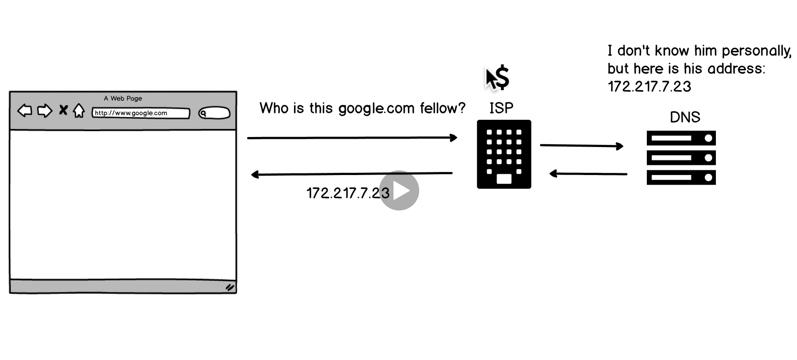
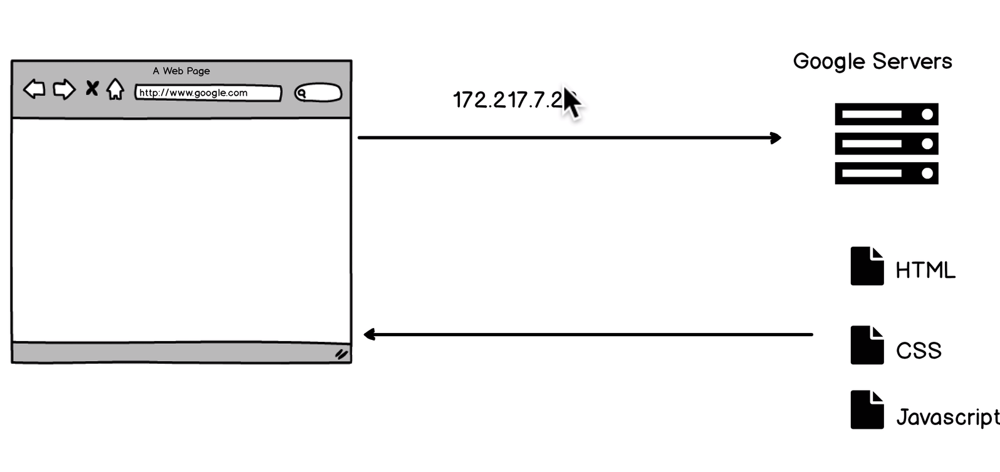

We type google.com in the broswer, when the request reaches the isp it translates to 172.217.7.23 using a dns server and sends the info back to the browser.
Now the browser has the correct ip address it can contact Googles servers.
source: thousandeyes
Traceroute is a network diagnostic tool used to track in real-time the pathway taken by a packet on an IP network from source to destination, reporting the IP addresses of all the routers it pinged in between. Traceroute also records the time taken for each hop the packet makes during its route to the destination.
Traceroute is a useful tool for determining the response delays and routing loops present in a network pathway across packet switched nodes. It also helps to locate any points of failure encountered while en route to a certain destination.
Ex: on windows pc run: tracert bbc.co.uk
Based on previous lectures, we can see the kinds of things that would make a performant, fast website/app.
Source: vox.com
ARPANET, the precursor to the modern internet, was an academic research project funded by the Advanced Research Projects Agency, a branch of the military known for funding ambitious research projects without immediate commercial or military applications. Initially, the network only connected the University of Utah with three research centers in California. ARPANET was a test of a then-novel technology called packet-switching, which breaks data into small "packets" so they can be transmitted efficiently across the network. It also had a more practical goal: allowing more efficient use of expensive computing resources. Computer scientists sometimes used ARPA money to buy computers, and the agency hoped that ARPANET would allow universities to share these expensive resources more efficiently. One of the first ARPANET applications was Telnet, which allowed a researcher at one ARPANET site to log into a computer at another site.

Originally, the entire ARPANET was managed by the military. But network operators realized that a centralized network would eventually become unmanageable if it continued to grow. They decided that the network should be reorganized as a decentralized "network of networks." Under this scheme, different networks would be controlled by different organizations, but all the networks able to communicate using shared standards, forming a shared "internet." The military asked the computer scientists Robert Kahn and Vint Cerf to develop new networking standards to make this possible. The result was a set of standards known as TCP/IP. These standards specified the basic format of data packets transmitted across the internet. On January 1, 1983, the ARPANET switched to using TCP/IP, marking the birth of the modern internet. The switch to TCP/IP didn't make much difference from a user perspective — applications like email and Telnet worked about the same as they had before. But the new standard paved the way for much faster network growth by lowering the barrier to entry for new networks. One of the first new networks to connect to the new internet was CSNET, which was funded by the National Science Foundation to link computer science departments across the country. This map shows the location of ARPANET and CSNET nodes (labeled "Phonenet"), which after 1983 communicated with each other using TCP/IP. By the time the ARPANET was decommissioned in 1990, it was just one of many networks that comprised the internet. Today, the internet is made up of more than 40,000 different networks. These networks still communicate with each other using the TCP/IP standards Cerf and Kahn developed in the 1970s.
source: geeksforgeeks
The Internet is a global network of networks while the Web, also referred formally as World Wide Web (www) is collection of information which is accessed via the Internet. Another way to look at this difference is; the Internet is infrastructure while the Web is service on top of that infrastructure. Alternatively, the Internet can be viewed as a big book-store while the Web can be viewed as collection of books on that store. At a high level, we can even think of the Internet as hardware and the Web as software!
browser wars, the coming of web standards.